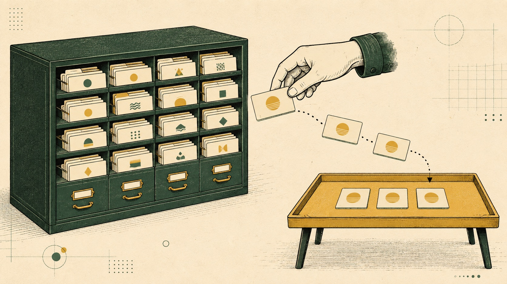
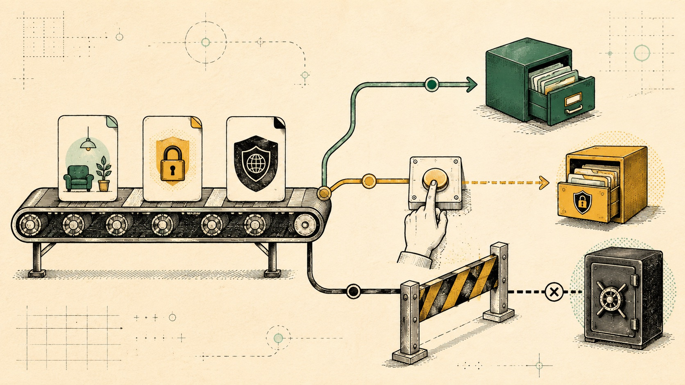
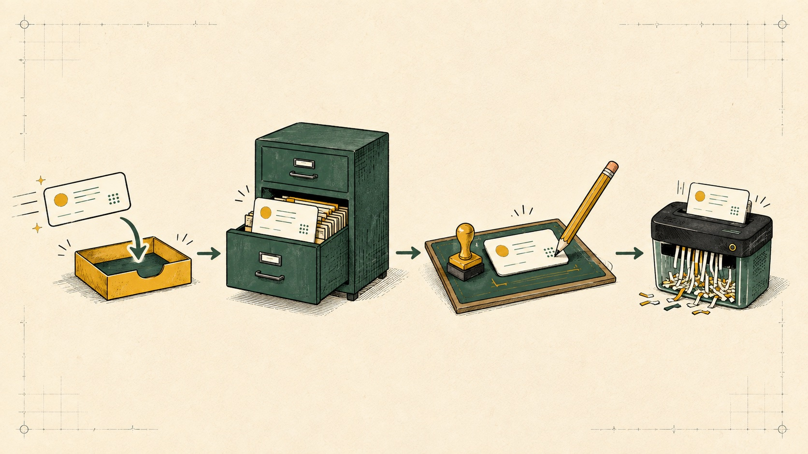

اول یه مرور سیثانیهای
این مقاله روی چندتا چیزی که قبلاً ساختیم سوار میشه. اگر تازه رسیدی، لازم نیست همه رو یکجا بخونی؛ هرکدوم برات ناآشناست بازش کن.
حافظه یعنی مدل واقعاً تو رو «میشناسه»؟
نه دقیقاً. مدل مثل آدم خاطره رو داخل مغزش نگه نمیداره. اپلیکیشن یه سری اطلاعات رو جایی ذخیره میکنه و هر وقت لازم شد، بخش مرتبطش رو دوباره جلوی مدل میذاره. مدل هم براساس همون چیزی که الان میبینه جواب میده.
پنجرهٔ اطلاعات مدل یا Context window، میز کار مدله؛ فقط چیزهایی که الان روی میز جا شدن دیده میشن. حافظهٔ بلندمدت کمد بایگانیه؛ اطلاعات داخلشه، ولی باید پروندهٔ درست رو پیدا کنی و بیاری روی میز.

پس زیادبودن حافظه لزوماً ایجنت رو باهوشتر نمیکنه. اگر بازیابی بد باشه، پروندهٔ اشتباه میاد روی میز و مدل با اعتمادبهنفس جواب اشتباه میده.
این پنجتا رو با هم قاطی نکن
| اسم | به زبان ساده | چقدر میمونه؟ | مثال |
|---|---|---|---|
| پنجرهٔ اطلاعات مدل Context window | چیزی که مدل همین الان میبینه | تا وقتی داخل ورودی همون اجراست | پیامهای اخیر و چند حافظهٔ بازیابیشده |
| وضعیت کار State | دفتر وضعیت کار فعلی | تا پایان همان روند کاری | فهرست فایلها، پیشنهاد مرتبسازی و جواب ابزار |
| نقطهٔ ذخیره Checkpoint | نسخهٔ ذخیرهشده از وضعیت کار | بسته به محل ذخیرهسازی | ایجنت بعد از تأیید تو از همان مرحله ادامه بده |
| حافظهٔ بلندمدت Long-term memory | اطلاعات انتخابشده بین چند گفتگو | تا زمان حذف یا انقضا | ترجیح تو برای اسمگذاری پوشهها |
| گزارش رویدادها Audit log | مدرک اینکه چه اتفاقی افتاده | طبق سیاست نگهداری | چه پیشنهادی داده شد، کی تأیید کرد و نتیجه چی شد |
این گزارش باید برای بررسی قابلاعتماد باشه. اگر خود ایجنت بتونه آزادانه گزارشها رو بازنویسی یا پاک کنه، عملاً شاهد ماجرا هم دست همون متهمه.
توی لنگگراف، حافظه معمولاً دو لایه داره
حافظهٔ کوتاهمدتِ یک مسیر گفتگو
ذخیرهکنندهٔ مرحله یا Checkpointer، وضعیت کار رو قدمبهقدم نگه میداره. با شناسهٔ همان گفتگو که در کد thread_id نام دارد، میتونی کار نیمهتمام رو ادامه بدی. وقتی کار برای تصمیم یک آدم متوقف میشه، همین بخش یادش میمونه کجا ایستاده بود.
حافظهٔ بلندمدت بین چند گفتگو
مخزن یا Store، چیزهایی مثل سلیقهٔ کاربر، اطلاعات تأییدشده یا تجربههای قبلی رو بیرون از وضعیت همان کار نگه میداره. با یک محدودهٔ جدا که اسم فنیاش Namespace است مشخص میکنی هر حافظه مال کدوم کاربر، تیم یا ایجنته.
InMemorySaver و InMemoryStore فقط ابزارهای موقت خود لنگگراف هستن. تا وقتی برنامه روشنه، وضعیت کار و اطلاعات ایجنت رو داخل حافظهٔ موقت دستگاه نگه میدارن؛ با خاموش یا دوباره اجراشدن برنامه هم پاک میشن.
اگر قبلاً برنامهات رو روی Vercel ساخته باشی، احتمالاً این اسمها رو ندیدی؛ چون Vercel محل اجرای برنامهست، نه حافظهٔ ایجنت. معمولاً وضعیت کارها رو خودمون با بخشهای مختلف برنامه و دیتابیس مدیریت میکنیم؛ درست مثل مسیری که در Jarvis ساختیم.
برای تمرین روی کامپیوتر خودت، InMemorySaver کافیه. برای ذخیرهٔ دائمی روی همان کامپیوتر میشه از SQLite استفاده کرد. برای یک برنامهٔ آنلاین هم معمولاً باید لنگگراف رو به یک دیتابیس خارجی مثل Postgres یا Redis وصل کرد.
خلاصه: لنگگراف این مسیر رو اختراع نمیکنه؛ فقط چیزی رو که قبلاً با چند بخش برنامه، شرط و دیتابیس میساختیم، مرتبتر و استانداردتر مدیریت میکنه.
اگر هرکدوم از این اصطلاحها هنوز برات گنگه، همون بخش رو کپی کن داخل هوش مصنوعی موردعلاقهات و آخرش بنویس: «مثل یک بچهٔ پنجساله برام توضیح بده؛ یک مثال روزمره هم بزن.» اسم کوتاه این مدل درخواست هم ELI5 است.
سه جور چیزی که ایجنت ممکنه یاد بگیره
واقعیت و سلیقه
مثلاً «کاربر جواب محاورهای میخواد» یا «عکسهای صفحه باید برن داخل پوشهٔ مخصوص خودشون». اسم فنی این نوع حافظه Semantic است.
تجربهٔ قبلی
مثلاً دفعهٔ قبل این روش مرتبسازی خوب جواب داد و کاربر بدون تغییر تأییدش کرد. اسم فنیاش Episodic است.
روش انجام کار
مثلاً قبل از جابهجایی فایلها اول یک پیشنمایش بساز و هیچوقت فایل رو پاک نکن. اسم فنیاش Procedural است.
این دستهبندی کمک میکنه بفهمی دقیقاً چی داری ذخیره میکنی. ولی هر سه یه سطح ریسک ندارن. سلیقهٔ رنگ پوشه حساس نیست؛ قانون اجرای تراکنش یا دستور امنیتی چرا.
فرض کن قانون سیستم میگه ایجنت بیشتر از ۱۰ دلار حق خرجکردن نداره. اگر خود ایجنت بتونه این عدد رو در حافظه تغییر بده، خیلی راحت قانون امنیتی رو دور میزنه. پس قانونهای اصلی باید نسخهٔ مشخص داشته باشن، محدود باشن و ایجنت اجازهٔ نوشتن یا تغییرشون رو نداشته باشه.
این اصطلاحها یعنی چی؟
چیزی مثل زبان، لحن یا پوشهٔ موردعلاقهٔ تو. تغییرش معمولاً خطر امنیتی نداره.
قانونی مثل سقف خرج یا فهرست مقصدهای مجاز. ایجنت باید ازش پیروی کنه و نباید بتونه خودش تغییرش بده.
یعنی هر تغییر قانون شماره و تاریخ داشته باشه تا معلوم باشه چه کسی، چه زمانی و چرا تغییرش داده.
یعنی چه کسی اجازه داره اطلاعات رو اضافه یا ویرایش کنه. ایجنت میتونه سلیقهها رو پیشنهاد بده، ولی نباید اجازهٔ تغییر قانون امنیتی رو داشته باشه.
«جواب کوتاه دوست دارم» یک سلیقهٔ ذخیرهشده است. «بیشتر از ۱۰ دلار خرج نکن» یک قانون امنیتی است. اولی میتونه در حافظه تغییر کنه؛ دومی باید بیرون از دسترس ایجنت بماند.
مثال واقعی: ایجنت مرتبکنندهٔ دسکتاپ
فرض کن همون ایجنت سادهٔ قبلی رو ارتقا دادیم. فایلها رو میبینه، پیشنهاد میده کجا برن و بعد از تأیید تو جابهجاشون میکنه. هر نوع اطلاعات باید جای درست خودش بره:
فهرست فایلهای همین اجرا، دستهبندی پیشنهادی و جواب «تأیید یا رد» تو.
سلیقهٔ تأییدشدهٔ تو: عکسهای صفحه برن داخل پوشهٔ مخصوص خودشون.
چه فایلهایی واقعاً جابهجا شدن، چه کسی تأیید کرد و راه برگردوندن تغییرها کجاست.
رمز فایل فشرده، کلید موقت، کد یکبارمصرف یا متن خصوصیای که برای این کار لازم نیست.
دفعهٔ بعد، ایجنت سلیقهٔ ذخیرهشده رو پیدا میکنه و از اول پیشنهاد بهتری میده. اما هنوز حق جابهجایی نداره؛ حافظه فقط پیشنهاد رو بهتر کرده، نه اینکه اجازهٔ اجرا داده باشه.
ایجنت نباید هر جملهای رو مستقیم حفظ کنه
نوشتن در حافظه باید خودش یک مسیر کنترلشده داشته باشه:

واقعیت، سلیقه، تجربه یا دستور؟
همین کاربر، یک ایجنت یا کل سازمان؟
یک ساعت، سی روز یا تا وقتی کاربر حذفش کنه؟
ایجنت، کاربر یا فقط مدیر سیستم و مسیر تغییر قانونها؟
یک نمونهٔ خیلی کوچک در لنگگراف
لازم نیست با دیدن کد پایین همهٔ خطها رو بفهمی. اول فقط کاری که انجام میده رو ببین؛ بعد اگر خواستی هر نمونه رو باز کن.
بدون کد، کل ماجرا این چهارتاست:
نمونهٔ اول: وصلکردن دو نوع حافظهبرای دیدن کد و توضیح خطبهخط کلیک کن
from langgraph.checkpoint.memory import InMemorySaver
from langgraph.store.memory import InMemoryStore
checkpointer = InMemorySaver()
store = InMemoryStore()
graph = builder.compile(
checkpointer=checkpointer,
store=store,
)
config = {
"configurable": {"thread_id": "desktop-001"}
}- دو ابزار موقت حافظه رو از لنگگراف میگیریم.
- یکی رو برای نگهداشتن مرحلهٔ فعلی و یکی رو برای اطلاعات ماندگارتر میسازیم.
- با
compileهر دو رو به مسیر کار ایجنت وصل میکنیم. - با
thread_idروی این اجرای مشخص برچسب «desktop-001» میزنیم.
نمونهٔ دوم: ذخیرهکردن یک سلیقهٔ کاربربرای دیدن کد و توضیح خطبهخط کلیک کن
user_id = "user-123"
namespace = (user_id, "desktop_preferences")
store.put(
namespace,
"sorting_rules",
{
"screenshots_folder": "Screenshots",
"never_move": ["Invoices"],
},
)- به کاربر یک شناسه میدیم تا حافظهاش با بقیه قاطی نشه.
- یک کشوی جدا برای سلیقههای مرتبسازی دسکتاپش میسازیم.
- داخل آن مینویسیم عکسهای صفحه کجا برن و پوشهٔ فاکتورها هیچوقت جابهجا نشه.
- این فقط یک سلیقهٔ ذخیرهشده است؛ هنوز اجازهٔ جابهجایی فایلها رو به ایجنت نمیده.
هیچ اشکالی نداره. اول فقط چهار کارت بالا رو بفهم. بعد یکی از نمونهها رو همراه توضیحش داخل هوش مصنوعی کپی کن و بگو: «این کد رو خطبهخط و با مثال دفتر و کمد برام توضیح بده.»
شش اشتباه رایج که حافظه رو خراب میکنه
این کارها دردسر میسازن
- کل گفتگوها رو بدون انتخاب نگه داری
- حافظهٔ چند کاربر رو توی یک محدوده بریزی
- حدس مدل رو واقعیت قطعی حساب کنی
- هیچ راهی برای دیدن و حذف حافظه ندی
- همهٔ حافظهها رو هر بار جلوی مدل بریزی
- قانون امنیتی رو به حافظهٔ قابلویرایش بسپری
طراحی بهتر این شکلیه
- فقط چیز لازم و تأییدشده رو ذخیره کن
- برای هر کاربر و هر برنامه محدودهٔ جدا داشته باش
- منبع، زمان و میزان اطمینان رو کنار حافظه نگه دار
- زمان نگهداری و گزینهٔ اصلاح یا حذف مشخص کن
- فقط چند حافظهٔ مرتبط رو دوباره جلوی مدل بیار
- مجوز و قانونهای امنیتی رو بیرون از حافظه نگه دار

گاهی یک ورودی خراب باعث میشه اطلاعات یا دستور اشتباه وارد حافظه بشه و بعداً دوباره روی تصمیم ایجنت اثر بذاره. اسم فنی این حمله Memory poisoning است. به همین دلیل اطلاعاتی که از حافظه برمیگردن باید «اطلاعات زمینهایِ قابلبررسی» حساب بشن، نه حقیقت مقدس.
حافظه به ایجنت اختیار نمیده
این مهمترین بخش مقالهست. ایجنت ممکنه یادش باشه که تو معمولاً جواب کوتاه دوست داری؛ مشکلی نیست. ولی جملهای مثل «کاربر قبلاً اجازهٔ خرج نامحدود داده» نباید از حافظه تبدیل به مجوز واقعی بشه.
| اطلاعات | حافظه میتونه کمک کنه؟ | اختیار نهایی باید کجا باشه؟ |
|---|---|---|
| لحن و زبان موردعلاقه | بله، یک سلیقهٔ معمولیه | خود کاربر هر وقت خواست تغییرش بده |
| پوشهٔ پیشنهادی فایلها | بله، برای پیشنهاد بهتر | اجازهٔ دسترسی به فایلهای کامپیوتر و تأیید عملیات، بیرون از ایجنت |
| سقف هزینه یا فهرست مقصدهای مجاز | فقط برای نمایش و توضیح | قانونی مستقل، محدود و دارای نسخهٔ مشخص |
| امضای تراکنش | نباید کلید یا عبارت بازیابی رو نگه دارد | انسان و سختافزار امن |
ایجنت پیشنهاد میده. حافظه اطلاعات مرتبط رو برمیگردونه. قانونهای مستقل محدوده رو چک میکنن. آدم نظارت میکنه و هرجا کلید یا دارایی وسطه، مرز امن باید بیرون از محیط اجرای ایجنت بمونه.
قبل از روشنکردن حافظه این چکلیست رو رد کن
حافظهٔ بهتر یعنی انتخاب بهتر؛ نه ذخیرهٔ بیشتر
ایجنت خوب لازم نیست تمام زندگی تو رو یادش بمونه. باید بدونه برای همین کار، چه چیزی لازمه، از کجا اومده، تا کی معتبره و چه کسی اجازه داره عوضش کنه. بقیهش یا باید فراموش بشه، یا اصلاً ذخیره نشه.
منابع رسمی و بهروز
ذخیرهٔ وضعیت و حافظه در لنگگراف ↗اضافهکردن حافظهٔ کوتاهمدت و بلندمدت ↗اطلاعاتی که هنگام اجرا در اختیار مدل قرار میگیرد ↗انواع حافظه: دانشی، تجربهها و روشها ↗دیسکلیمر: این راهنما برای آموزش معماریه. جزئیات ذخیرهسازی، حریم خصوصی و مدت نگهداری اطلاعات باید براساس نوع محصول، داده و قوانین محل فعالیتت طراحی بشه. بخشهایی از تحقیق، نگارش و پیادهسازی این صفحه با کمک یک ایجنت هوش مصنوعی آماده شده.